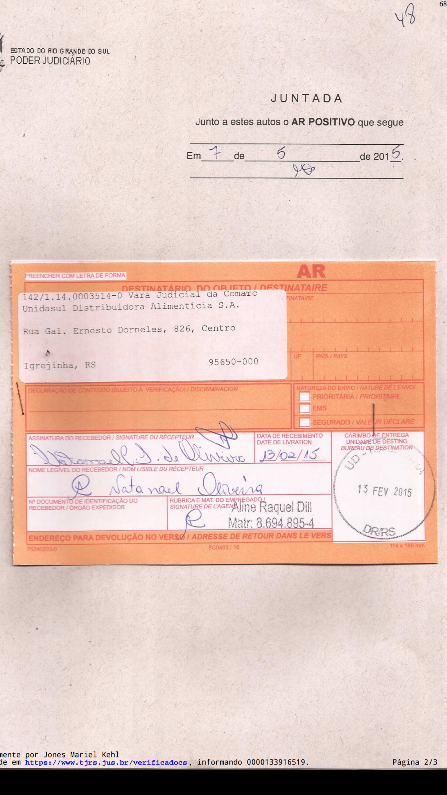
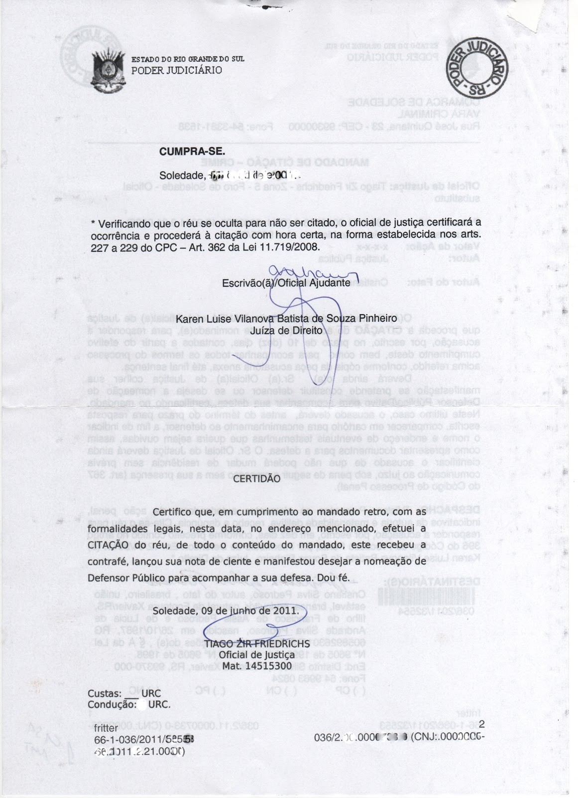
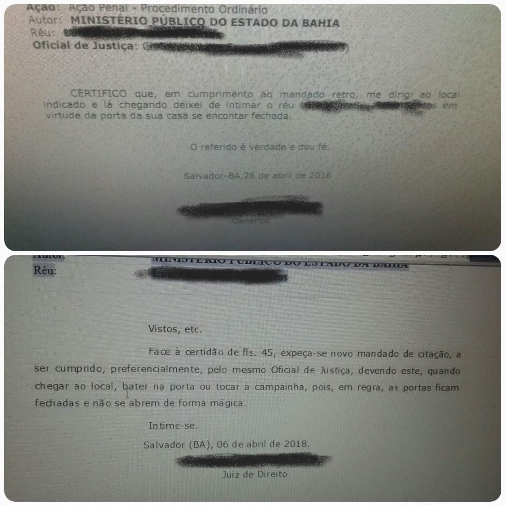
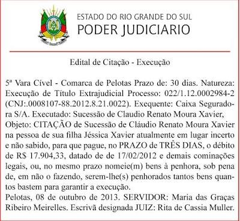

Um AR, um mandado, um edital e uma certidão mostram atos diferentes. Leia cada registro pela frase que documenta a comunicação.
A diferença está no que a comunicação faz com o destinatário. A primeira chama réu, executado ou interessado para integrar a relação processual. A segunda dá ciência dos atos e termos do processo a alguém que já participa ou precisa ser informado. O documento pode ser uma carta, uma publicação ou um mandado; o suporte não define sozinho o ato.
Esse teste não depende do nome impresso no alto da folha. “Mandado”, “carta”, “edital” e “nota” identificam o suporte ou a forma do registro; o comando ou a certidão mostra o ato que se pretende praticar. Um documento pode reunir informação de mais de uma etapa. A leitura fica mais segura quando você separa quem comunica, a quem se dirige, qual verbo aparece e que fato a peça registra.
A pergunta 11 da avaliação de 2015, sobre hora certa, obriga a dar precisão a essa diferença. O oficial dá ciência a um familiar ou vizinho para viabilizar a diligência futura, mas o ato que busca efetuar é a citação do réu. A ciência intermediária não transforma a convocação em simples notícia de andamento. O artigo que define cada ato fornece o critério; a certidão mostra se o percurso ocorreu.
A finalidade inicial importa porque o processo precisa chamar a pessoa contra quem a demanda é dirigida. Depois que a relação se forma, uma série de decisões e atos exige que seus destinatários sejam informados para acompanhar o andamento. A expressão legal “integrar a relação processual” descreve a entrada; “dar ciência dos atos e termos” descreve a comunicação posterior. Se a questão oferece dois documentos com a mesma aparência oficial, compare o que cada um comunica, não o papel em que foi impresso.
Didier descreve a convocação e a ciência da demanda como duas funções do primeiro ato. A palavra “integrar” ajuda a distingui-lo de uma notícia posterior sobre decisão, despacho ou andamento. Ao abrir um documento, procure o verbo e o objeto: chama alguém para integrar ou informa um ato que ocorreu?
O aviso de recebimento atribuído ao processo 142/1.14.0003514-0 identifica como destinatária a Unidasul Distribuidora Alimentícia S.A. O registro positivo e a marca manuscrita aparecem no campo de recebimento. A leitura possível é citação encaminhada pelo correio e registrada como recebida. A imagem não permite atribuir com segurança a assinatura a determinada pessoa nem inferir sua função na empresa.
O caso real que reaparece nesta aula vem da prova 2015/1, questão sobre hora certa. O AR não é parte daquele processo: cada peça conserva seu próprio número e contexto.
Observe como a informação se distribui. O nome empresarial está no campo impresso de destinatário; o endereço acompanha essa identificação; o aviso assinala que a correspondência retornou com registro positivo. São dados que permitem reconhecer a modalidade postal e localizar a destinatária daquela remessa. A assinatura e a anotação manuscrita compõem o registro da entrega, mas a cópia não torna todos os traços legíveis. A resposta permanece no limite do que o documento mostra.
Esse recorte importa porque a validade e o resultado da comunicação dependem do procedimento legal aplicável ao destinatário e ao caso. O aviso não substitui a petição, a ordem judicial nem os demais elementos dos autos. Ele documenta um passo específico. Ao responder, indique esse passo e apoie a conclusão no campo legível, sem completar a marca manuscrita com uma identidade que a reprodução não confirma.
O número do processo e a razão social ajudam a manter a leitura amarrada àquela correspondência. Não se trata de um AR abstrato: a etiqueta mostra a remessa dirigida à empresa, e o processo indicado na peça permite localizar o registro correspondente. Em uma resposta escrita, é possível dizer qual documento se lê, a quem foi remetido e que resultado aparece. A frase “o AR é positivo” descreve o status postal; dizer quem escreveu o nome manuscrito, quando a letra não permite ler, acrescentaria um dado que o fac-símile não fornece.

O CPC exige a citação para a validade do processo, ressalvadas as hipóteses legais; o comparecimento espontâneo supre falta ou nulidade e inicia o prazo para contestar ou embargar. A citação válida também produz os efeitos legais descritos no código.
O dispositivo distingue o despacho que ordena a citação do ato que a efetiva. Para a validade em relação ao réu, o comparecimento espontâneo pode suprir ausência ou nulidade nos termos do parágrafo primeiro. A consequência é processual: a partir do comparecimento, começa o prazo para contestar ou embargar. O foco deste trecho é a função da citação; a contagem concreta depende do marco e das regras de prazo estudadas adiante.
O meio eletrônico é a via preferencial. A lei prevê que o envio ocorra em até dois dias úteis da decisão que o determina, aos endereços informados pelo citando no banco de dados do Judiciário. Se não houver confirmação em três dias úteis, contados do recebimento da comunicação eletrônica, o CPC prevê outras vias: correio, oficial de justiça, comparecimento em cartório ou edital. Preferência, portanto, não significa exclusividade; o próprio dispositivo organiza o que acontece quando falta confirmação.
Essa sequência ajuda a situar o AR. O aviso não é a ordem que escolheu o correio nem o conjunto de documentos encaminhados. Ele registra o resultado da tentativa postal. O carimbo positivo do exemplar permite reconhecer o registro de entrega. Se a entrega não se realiza ou o meio não se aplica, os autos podem seguir a outra modalidade prevista na lei.
Didier distingue existência do processo, eficácia em relação ao réu e validade dos atos que vêm depois. Essa distinção evita transformar a falta de citação em inexistência de tudo o que ocorreu; o defeito recai sobre a relação com o réu e os atos subsequentes, nos termos que a lei estabelece.
Há ainda efeitos associados à citação válida. O Código enumera a litispendência, a litigiosidade da coisa e a constituição em mora do devedor, com a ressalva do próprio artigo para as regras civis de mora. Esses efeitos não estão escritos no recibo postal; resultam da citação válida, qualquer que tenha sido a via utilizada. Por isso, classificar um AR como postal explica o meio documentado, mas a análise do processo exige também saber se o ato se aperfeiçoou segundo as regras aplicáveis.
O encaminhamento postal reúne dois planos: o que foi remetido e o que o retorno comprova. A carta contém informações para o destinatário, enquanto o recibo retorna aos autos como registro da entrega. Quando a destinatária é pessoa jurídica, a lei admite entrega a pessoa com poderes de gerência ou administração ou a funcionário responsável pelo recebimento de correspondências. Essa regra não transforma a imagem em prova da identidade de quem assinou: destinatária impressa e signatário são campos diferentes.
Na questão da prova sobre hora certa, esse dado serve de contraste. Um registro postal positivo não informa buscas sucessivas por oficial nem aviso de retorno. Esses fatos pertencem a outra modalidade e precisam aparecer na certidão correspondente. Classificar o AR corretamente impede que se transfiram a ele condições de uma diligência que não registra.
A questão 11 da avaliação 1 de 2015 pergunta quando cabe citação por hora certa. A resposta começa por duas buscas do oficial no domicílio ou residência sem encontrar o citando. Soma-se a suspeita de ocultação. Só então o oficial avisa pessoa da família ou, na falta, vizinho, para voltar no próximo dia útil, na hora designada. Em condomínio edilício ou loteamento com controle de acesso, o aviso pode ser entregue ao funcionário da portaria responsável por receber correspondência.
No retorno, a lei regula o que acontece se o citando não estiver, e também se a pessoa avisada estiver ausente ou recusar receber o mandado. O oficial certifica a ocorrência e deixa contrafé nos termos legais; depois, o escrivão ou chefe de secretaria envia comunicação em até dez dias da juntada. A questão pede os pressupostos e a sequência; uma tentativa isolada não compõe esse caminho.
A banca não pergunta apenas quem recebe o aviso. Ela pergunta quando a modalidade pode ser empregada, de modo que a resposta começa antes do retorno: o oficial precisa ter procurado o citando duas vezes em sua residência ou domicílio, sem encontrá-lo, e surgir suspeita de ocultação. A ordem das providências separa a ausência no endereço da hipótese legal que permite marcar hora certa.
A medida tenta dar efetividade à comunicação sem dispensar as etapas que a justificam. O oficial avisa alguém próximo do endereço, indica o retorno e registra o que encontrou no horário marcado. A lei presume concluída a diligência em determinadas situações no retorno, inclusive se a pessoa da família ou o vizinho estiver ausente ou recusar receber o mandado. A certidão ganha especial importância porque permite conferir buscas, suspeita, aviso e retorno na ordem em que ocorreram.
O aviso prepara o retorno; ele não entrega a contrafé ao réu naquele primeiro momento. O destinatário é definido em sequência: familiar ou, na falta, vizinho; em condomínio ou loteamento controlado, funcionário da portaria responsável por correspondência. No dia e hora marcados, o oficial retorna. Se o citando não estiver, o oficial se informa sobre a ausência e certifica a ocorrência; a lei também disciplina a efetivação quando o familiar ou vizinho estiver ausente ou recusar o mandado. A certidão e a contrafé registram essa etapa, e depois o escrivão envia comunicação dentro do prazo legal.
No modelo de Soledade, datado de 9 de junho de 2011, o oficial certifica que efetuou a citação, que o réu recebeu a contrafé, lançou nota de ciente e pediu a nomeação de defensor público. Esse trecho registra cumprimento pessoal. O formulário também contém texto impresso sobre hora certa, mas essa alternativa genérica não altera a certidão específica do que ocorreu.
O outro mandado pertence a uma ação penal na Bahia, em 26 de abril de 2016. O oficial diz que deixou de intimar o réu porque encontrou a porta da casa fechada. O documento registra tentativa sem cumprimento. Nos dois registros, a frase operativa do oficial é mais informativa que o título ou o texto pré-impresso.
O despacho reproduzido na segunda página manda expedir novo mandado e orienta o oficial a bater ou tocar a campainha. Essa ordem posterior é outro ato nos autos; ela não altera a certidão de 2016. A primeira peça registra que não houve intimação porque a porta estava fechada. A segunda manda tentar novamente em 2018. Separar as datas e os verbos evita transformar a orientação posterior em prova de cumprimento anterior.
Na comparação com a pergunta de hora certa, a certidão da Bahia não descreve duas buscas, suspeita de ocultação ou aviso a terceiro. Ela registra a porta fechada e a falta de cumprimento. A pergunta da prova exige requisitos legais específicos, não uma inferência a partir de qualquer tentativa que terminou sem localizar o destinatário.
O art. 251 descreve os elementos que ajudam a ler a certidão: o oficial procura o citando, lê o mandado, entrega a contrafé e registra se foi recebida ou recusada. Também obtém a nota de ciente ou certifica que ela não foi lançada. No exemplar de Soledade, o agente afirma que a contrafé foi recebida e que o réu lançou a nota. A manifestação sobre defensor público acrescenta o que o próprio oficial ouviu após a comunicação.
O formulário impresso traz uma hipótese diferente, em texto legal então vigente, mas o retorno preenchido relata a citação efetivada. A frase certificada tem data e assinatura próprias; é ela que informa o resultado daquela diligência.
Essa comparação não coloca as duas peças em um único processo. O mandado de Soledade está datado de 2011; a certidão da ação penal baiana é de 2016, e o despacho que manda repetir a diligência vem de 2018. Cada data pertence a um registro próprio. O elemento comum é a tarefa de leitura: localizar a frase que afirma cumprimento ou que relata a tentativa frustrada e descrever apenas aquele resultado.


O edital de Pelotas foi expedido em 8 de outubro de 2013, em execução de título extrajudicial. Ele identifica a sucessão executada, a filha mencionada no documento e o objeto da convocação. O prazo impresso é de trinta dias. Leia esse número como parte do exemplar histórico, que antecede o CPC atual.
A peça foi expedida pelo juízo de Pelotas em uma execução de título extrajudicial. Identifica a sucessão executada e sua filha, especifica a convocação e registra as providências esperadas naquele processo. O cabeçalho reúne vara, prazo e natureza da execução; no corpo, o verbo “citação” marca a finalidade do edital. Esses dados permitem reconhecer o registro sem transformar instruções próprias daquela execução em regra geral.
Na regra vigente, o edital depende de hipótese legal e de publicação certificada nos autos. O prazo não é uma duração automática: o juiz o fixa dentro da faixa legal, e a contagem começa na publicação única ou na primeira publicação, se houver mais de uma. O exemplar antigo registra a solução adotada em 2013; o artigo atual fornece o parâmetro para uma citação por edital hoje.
A questão 11 da avaliação de 2015 trata de hora certa, que exige duas buscas e suspeita de ocultação. A localização incerta que pode justificar edital e a ocultação presumida após diligências são fundamentos distintos; um edital de 2013 não responde à pergunta sobre o procedimento de hora certa.
O artigo exige mais do que a publicação. O autor afirma a circunstância autorizadora ou o oficial a certifica; as publicações na rede, no tribunal e na plataforma do Conselho Nacional de Justiça precisam ser certificadas; o edital adverte sobre curador especial se houver revelia. Esses requisitos organizam o modo como a convocação pública é feita. O prazo impresso no modelo não substitui nenhum deles e tampouco informa o prazo de resposta descrito no corpo do documento.
Hoje, a citação por edital depende das hipóteses legais, entre elas réu desconhecido ou incerto, lugar ignorado, incerto ou inacessível e previsão legal específica. A publicação deve ocorrer na internet, no sítio do tribunal e na plataforma de editais do CNJ, com certificação nos autos. O juiz fixa o prazo entre vinte e sessenta dias, contado da publicação única ou da primeira publicação.
Prazo do edital
A certidão da Nota nº 1690/2015 registra a expedição em 20 de maio, a disponibilização na edição 5561 do Diário da Justiça Eletrônico em 21 de maio e a publicação em 22 de maio de 2015. A linguagem informa que foi mantida decisão anterior. O destinatário recebe ciência de ato do processo: trata-se de intimação.
A certidão separa expedição em 20 de maio, disponibilização na edição 5561 do Diário da Justiça Eletrônico em 21 de maio e publicação registrada em 22 de maio de 2015. A própria certidão diz que a publicação é considerada no primeiro dia útil seguinte à disponibilização, conforme a lei que menciona. São marcos diferentes: a expedição identifica quando a nota saiu; a disponibilização indica a edição acessível; a publicação é a data que o documento certifica.
A diferença entre esses eventos aparece no próprio instrumento. A Nota nº 1690 foi expedida em 20/05; a edição 5561 ficou disponível em 21/05; a certidão registra publicação no dia útil seguinte, 22/05. O texto cita a Lei nº 11.419/2006 para explicar esse último marco. A peça dá evidência para identificar o ato e suas datas; saber quando termina um prazo posterior requer aplicar as regras de prazo ao marco correto.
O trecho reproduzido na certidão informa que a decisão anterior foi mantida. O destinatário recebe ciência desse pronunciamento. A questão da hora certa também usa o verbo “intimar” para a comunicação dirigida a familiar ou vizinho, mas esse aviso integra outro percurso e prepara o retorno do oficial. O objetivo imediato do ato, lido junto do contexto, distingue as duas situações.
Para identificar o ato, basta a certidão e sua referência à nota; para contar o prazo que venha depois, consulte a aula de prazos.
Se o juiz julgar improcedente liminarmente o pedido antes de citar o réu, o art. 241 determina que o réu seja intimado do trânsito em julgado da sentença. A comunicação informa o desfecho; não convoca o réu para integrar a relação processual. O exemplo ajuda a reconhecer por que uma notícia dirigida ao réu pode ser intimação mesmo quando ainda não houve citação.
O artigo trata de sentença de mérito favorável ao réu, transitada em julgado antes da citação. Nesse cenário, o escrivão ou chefe de secretaria comunica o resultado ao réu. A função da notícia acompanha o que já ocorreu: informar o desfecho de uma decisão que o favoreceu. A comunicação dirigida ao réu, portanto, informa o resultado sem convocá-lo para integrar o processo.
A hipótese é estreita: sentença de mérito em favor do réu, trânsito em julgado antes da citação e comunicação do resultado pelo escrivão ou chefe de secretaria. Não se trata de intimação de despacho durante uma demanda que o réu já acompanha. A regra explica por que pode haver uma comunicação destinada a quem ainda não foi citado, mas sua finalidade é informar a decisão favorável já transitada.
O contraste com a pergunta de 2015 mantém a classificação ancorada no ato. Na hora certa, o aviso a terceiro prepara a diligência de citação ao destinatário; na hipótese legal da sentença favorável, o julgamento já transitou e o que chega ao réu é seu resultado. A identidade do destinatário não basta para classificar a comunicação: momento e finalidade indicam a diferença.
A pergunta de prova permanece concreta: que ato este documento registra, e qual frase sustenta a resposta?
Classifique o documento e indique a frase ou o campo que sustenta a leitura.
O AR do processo 142/1.14.0003514-0 registra recebimento postal destinado à Unidasul. Não identifique o signatário se a imagem não o permite. A certidão da Nota nº 1690/2015 registra intimação da decisão, com expedição em 20/05, disponibilização em 21/05 e publicação em 22/05/2015.
Em Soledade, o oficial afirma que efetuou a citação e que o réu recebeu contrafé e lançou nota de ciente. Na ação penal da Bahia, o oficial afirma que deixou de intimar diante da porta fechada. São contextos processuais distintos.
Duas buscas sem encontrar o citando no domicílio ou residência, com suspeita de ocultação; aviso a pessoa da família ou, na falta, vizinho, para retorno no próximo dia útil, na hora designada. Em condomínio ou loteamento com controle de acesso, o funcionário responsável da portaria pode receber o aviso. A lei regula a efetivação no retorno, mesmo diante da ausência ou recusa do avisado, e a comunicação posterior ao citando.
Não. Trinta dias é o dado daquele edital de 2013. Pela regra atual, o juiz fixa de vinte a sessenta dias, contados da publicação única ou primeira publicação.